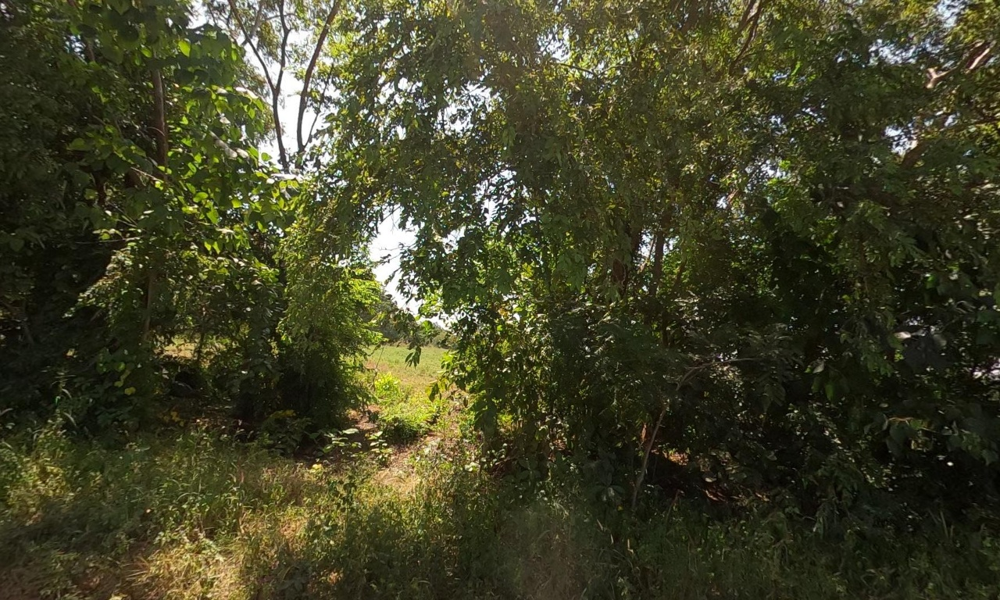
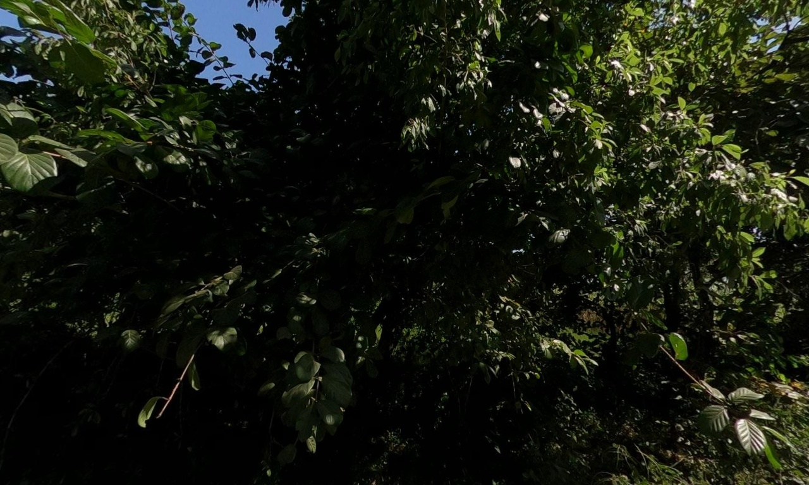
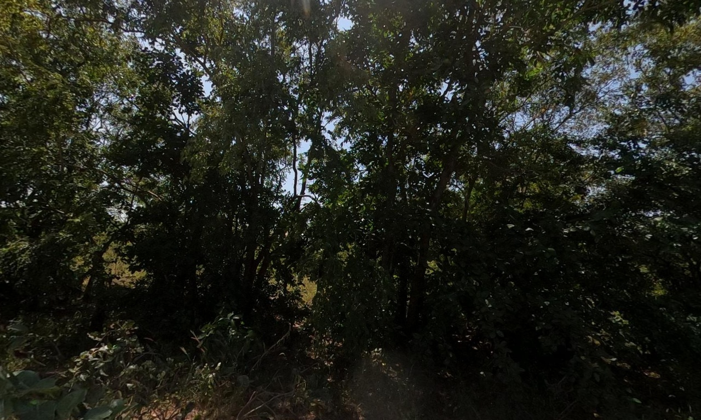
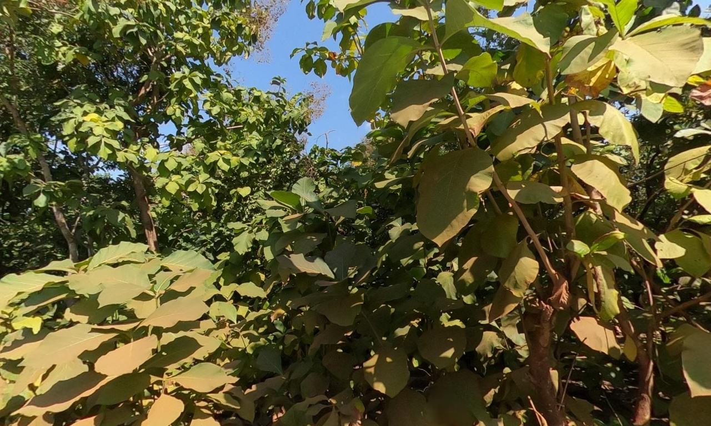
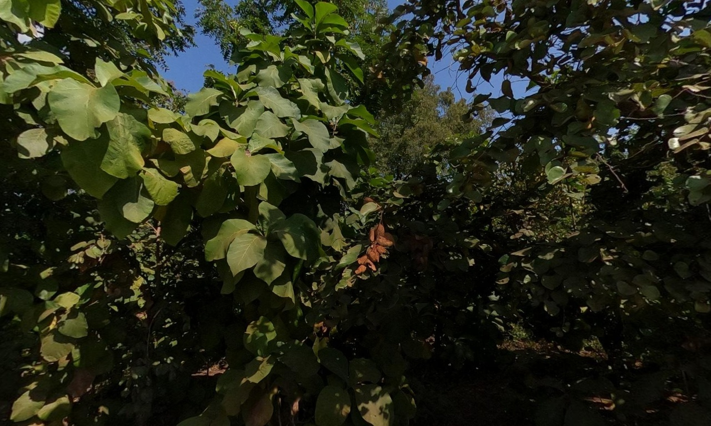
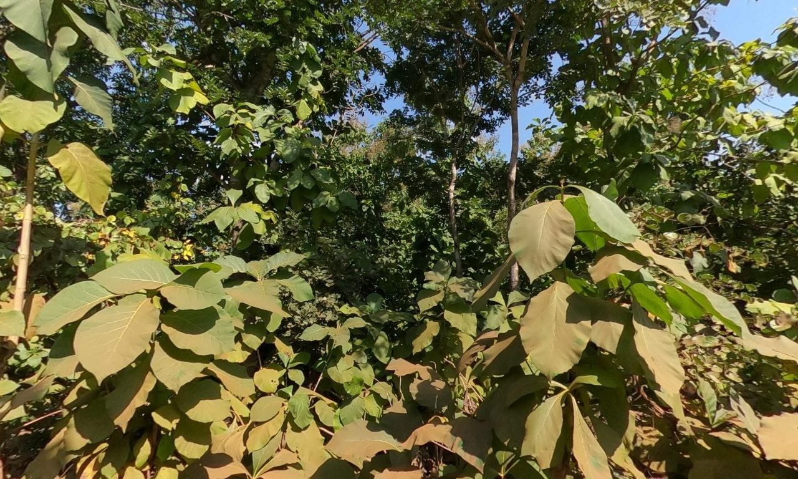
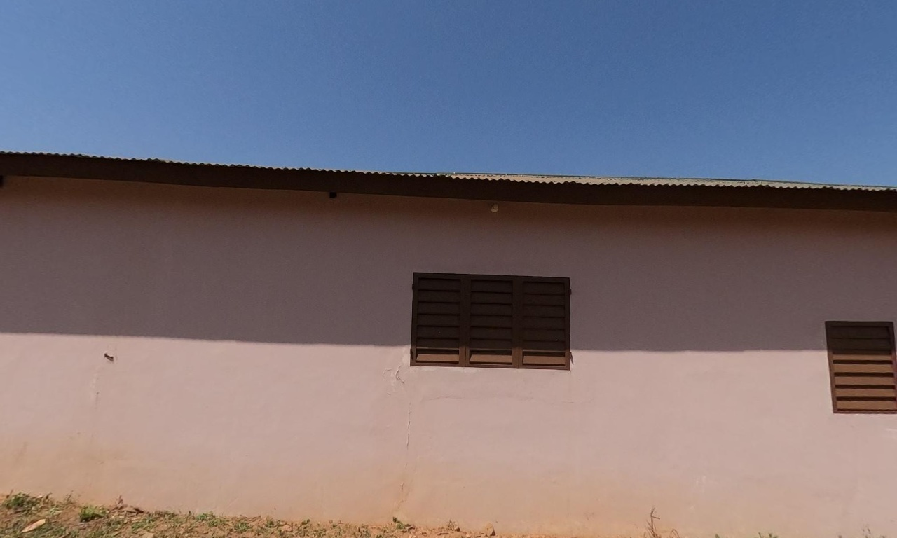

1005719038421133_right.jpg
pred Unclassifiable conf 1.0
GT Other annual herbaceous crop
dense foliage, closed canopy, obscured ground

1016878250631342_right.jpg
pred Unclassifiable conf 1.0
GT Shrubby vegetation
dense foliage, closed canopy, no ground visible

1019995600300788_right.jpg
pred Unclassifiable conf 1.0
GT Other annual herbaceous crop
dense foliage, closed canopy, obscured ground

1186283156802110_left.jpg
pred Unclassifiable conf 1.0
GT Cassava
dense foliage, closed canopy, no ground visible

1359208119133098_left.jpg
pred Sorghum/Millet conf 0.9
GT Mango
tall stalks with seed heads, linear leaf structure, characteristic panicles of s

2314521312343150_left.jpg
pred Unclassifiable conf 1.0
GT Teak
dense foliage, closed canopy, obscured ground

784919784579594_left.jpg
pred Unclassifiable conf 1.0
GT Teak
dense foliage, closed canopy, no visible ground

864160572975146_left.jpg
pred Sorghum/Millet conf 0.9
GT Sorghum/Millet
tall stalks, characteristic seed heads/panicles, dense planting pattern

901743965620331_right.jpg
pred Built-up conf 1.0
GT Built-up
building wall, roofing sheets, windows